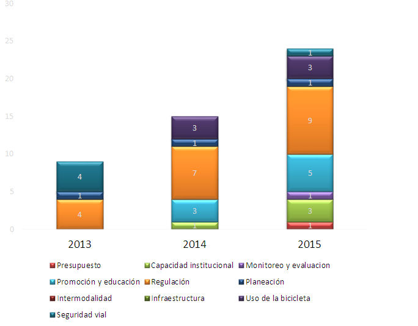
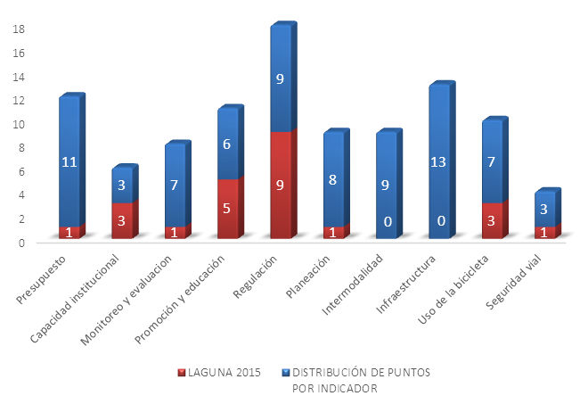

Gracias a la prácticamente nueva tendencia de promoción de políticas públicas para la movilidad no motorizada, las ciudades mexicanas han comenzado a dar los primeros pasos para promover el aumento de viajes en bicicleta.
El 12 y 13 de mayo se realizó en Torreón el Taller de Ciclociudades, con los expertos Xavier Treviño y Alejandra Leal, quienes dejaron claro que se tienen que tomar medidas para incrementar el uso de la bicicleta como medio de transporte urbano, pues en un futuro corto en la mayoría de las ciudades mexicanas se debe disminuir en un 50% el uso del automóvil.
El panorama no es sencillo, cuando de acuerdo con Alejandra Leal, del total del presupuesto federal para movilidad en México 73% se utiliza en infraestructura para los autos.
A partir de la publicación del Manual integral de movilidad ciclista para ciudades mexicanas Ciclociudades en 2011, y de su entrega formal a 30 gobiernos locales del país, se vuelve indispensable medir el impacto y nivel de avance de estas políticas en favor de la bicicleta.
El Ranking Ciclociudades, elaborado por El Instituto de Políticas para el Transporte y el Desarrollo México en el 2013 (ITDP por sus siglas en inglés), es una herramienta creada para medir este avance mediante indicadores de gestión y desempeño de la política para promover la bicicleta como medio de transporte.
En el primer año se evaluó el desempeño de las 30 ciudades más pobladas del país, en las que viven 56.3 millones de habitantes, más del 50% de la población del país.
En la Laguna a partir del estudio de ITDP se comenzaron a abordar los indicadores que se toman en cuenta para su evaluación. En el 2013 Torreón contaba con 3 indicadores evaluados dando un resultado de 9 puntos, el puntaje máximo en el 2013 fue de 43 puntos y lo obtuvo la Ciudad de México.
En el 2014 no sólo se consideró a Torreón sino a La Laguna y se empezaron a incrementar indicadores, pasando de 9 a 15 puntos, el puntaje máximo en el 2014 fue 39 puntos y lo obtuvo nuevamente la ciudad de México.
En el 2015 ya con mejor resultado e incrementando más indicadores La Laguna se posicionó en el lugar 7 de 30 ciudades evaluadas, alcanzando en el 2015 una puntuación 24.
A la fecha, en La Laguna del total de los viajes realizados sólo 2% son en bicicleta y la infraestructura ciclista es aún escasa. Existen áreas ciclistas en: bulevar Constitución, Senderos, bulevar Centenario, Mieleras y Diagonal Reforma.
Distribución de puntos por indicador de La Laguna

Los primeros pasos
¿Qué se necesita para que la Laguna sea una de las principales 3 Ciclociudades en México? De acuerdo con Alejandra Leal y Xavier Treviño, colaboradores de Punto Céntrico y de ITDP, los primeros pasos son: Voluntad política, capacitación y sinergias, asignar funcionarios responsables del tema, elaborar un instrumento de gestión, identificar aliados y asignar recursos.
Asimismo cada ciudad cuenta con una serie de indicadores con una distribución de puntos analizados y otorgados por el ITPD, para mejorar su posición en el ranking de ciclociudades. Estos son:
- Presupuesto: Las principales fuentes para financiar proyectos para la bicicleta se encuentran en los fondos federales y partidas afines asignadas dentro del gasto corriente de los gobiernos locales
- Capacidad institucional: La disponibilidad de un equipo especializado que centralice el conocimiento, la planeación y la implementación de acciones para una estrategia exitosa de promoción de la bicicleta.
- Monitoreo y evaluación: Se requiere de un análisis previo de la movilidad en bicicleta. Los datos como conteos, rutas con origen y destino, el estado actual de vialidades.
- Promoción y educación: Son elementos de fácil implementación, que no requieren de gran capital para la puesta en marcha.
- Regulación: El aumento de los usuarios de la bicicleta requiere de un marco legal que permita la convivencia segura con otros medios de transporte.
- Planeación: Una vez caracterizada la bicicleta dentro de la estructura urbana, deberá ser incluida dentro de planes y programas que impactan el funcionamiento de la ciudad.
- Intermodalidad: Antes de intervenir vialidades con infraestructura ciclista, brindar facilidades al ciclista para combinar el uso de la bicicleta con otros medios de transporte
- Infraestructura: Apostar por infraestructura ciclista de calidad que responda a las necesidades de viaje, cómodas y atractivas.
- Uso de la bicicleta: Entre los diferentes medios de transporte, aspiramos a que las ciudades en México cuenten con un 5% del total de los viajes en bicicleta.
- Seguridad Vial: Los accidentes o muertes ciclistas son una estadística valiosa, ya que refleja las dificultades reales que enfrentan los usuarios de la bicicleta
Para todo lo anterior se necesita identificar estrategias que requieren del trabajo de distintas áreas de gobierno, así como del apoyo y seguimiento por parte de sociedad civil.
Distribución de puntos en 2015
